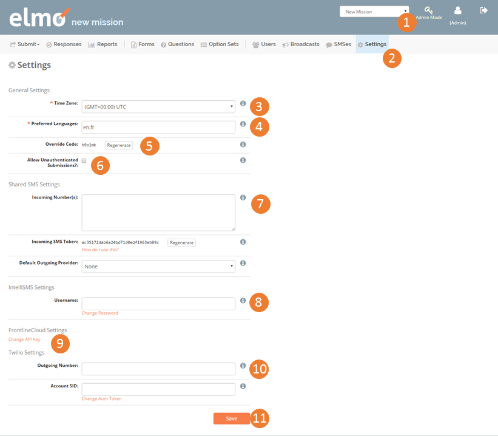

3. Settings¶
Settings are where you can define language preferences and SMS information for each mission.

- Select the title of the mission in the drop down menu found in the top right corner, right of the Admin Mode selection
- Select the Settings menu
3.1. Time Zone¶
- Set the appropriate time zone
3.2. Preferred Languages¶
Set the language(s) for the mission. This allows questions and forms to be defined in multiple languages for each mission, but it does not change the entire web interface of ELMO (defined in “Viewing the Footer” section above).
Enter the two-letter language code for the language (example: Arabic = ar; Chinese = zh). A list of ELMO compatible language codes can be found at this website: http://www.loc.gov/standards/iso639-2/php/code_list.php
If multiple codes exist, type them in the preferred order of use and separate them with a comma (example: ar, zh)

In this example, the mission’s primary language will be Arabic; Chinese will be used where Arabic is not available
3.3. Override Code¶
- Generate an Override Code
- Click on the Generate button to set an override code. This code should be given to observers if the ability to send incomplete responses is needed. Users are not allowed to submit incomplete responses without this code when using the ODK app. (See section for more detail)
- Click on the Regenerate button to create a new override code if desired.
- If generating a new code, please record the old code if there are previous live forms. The new code will only work for forms downloaded after the code is regenerated.
- Choose whether to allow unauthenticated submissions.